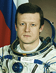

Lyndon B. Johnson Space Center
Houston, Texas 77058
|
National Aeronautics and Space Administration Lyndon B. Johnson Space Center Houston, Texas 77058 |
 |
Biographical Data |
||
DmitrY Yurievich Kondratyev (Colonel, Russian Air Force)
Test-cosmonaut of YuRI A. Gagarin Cosmonaut Training Center
COSMONAUT GROUP COMMANDER
PERSONAL DATA: Born May 25, 1969, in Irkutsk. His parents, Yuri Semyonovich Kondratyev and Valentina Dmitrievna, reside in Alma-Aty, Kazakhstan. Dmitry is married to Dinara, and they have a son named Vladislav. His hobbies include computers, karate, economics and fishing.
EDUCATION: Kondratyev completed Yak-52 flight training at the Alma-Aty Aviation Club in 1986. After graduation from Alma-Aty High School in 1986, he entered the Kachinsk Air Force Pilot School graduating in 1990 as a pilot-engineer. In 2000, he graduated from the Moscow State University for Economy, Statistics and Computer Science at the Economic Information Systems Department as an economist. He graduated from the Yuri A. Gagarin Air Force Academy in 2004.
EXPERIENCE: After graduation from pilot school he served as a pilot and a senior pilot in the Air Force. He flew different types of Russian fighter aircraft: MiG-21, MiG-29, Su-27. He is a Class 1 Air Force pilot. He is an Instructor of General Parachute Training, and has performed more than 150 parachute jumps.
Kondratyev was selected as a test cosmonaut candidate of the Gagarin Cosmonaut Training Center Cosmonaut Office in December of 1997. From January 1998 to March 2000, he attended basic space training. In 2000, Kondratyev was qualified as a test cosmonaut. He was assigned to the ISS 5 Backup crew as Soyuz Commander and ISS Flight Engineer and successfully completed that training in 2003. Kondratyev was then assigned to the ISS 13 Prime crew and trained as ISS Flight Engineer and Soyuz Commander for one and a half years until the crew reassignment named an ESA astronaut to this long duration mission. He was assigned to the ISS 20 Backup crew as Soyuz Commander and ISS Flight Engineer and successfully completed that training.
From May 2, 2006 through April 9, 2007, Kondratyev served as Director of Operations, Russian Space Agency, stationed at the Johnson Space Center in Houston, Texas.
In March 2007, Kondratyev received his U.S. FAA Private Pilot License. In March 2009, he received his U.S. FAA Airline Transport Pilot License.
Kondratyev is currently assigned to the ISS 26/27 prime crew as Soyuz Commander and ISS 27 Commander.
DECEMBER 2010
{kind=link}